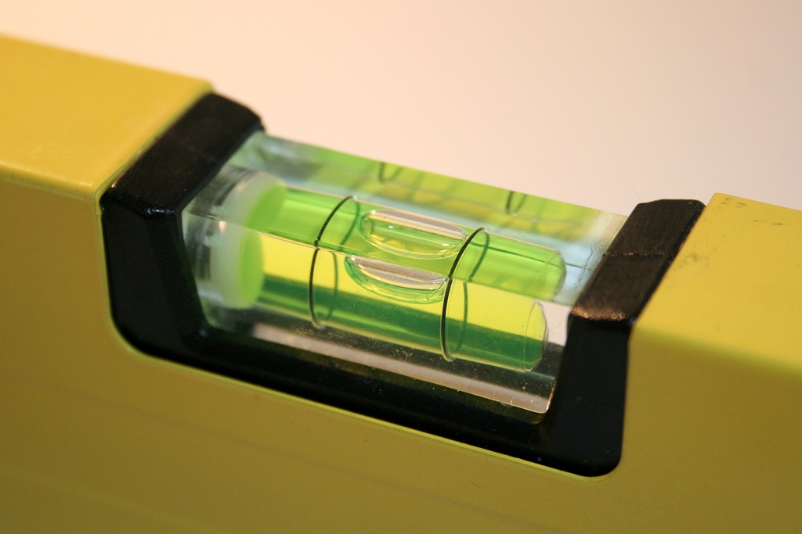
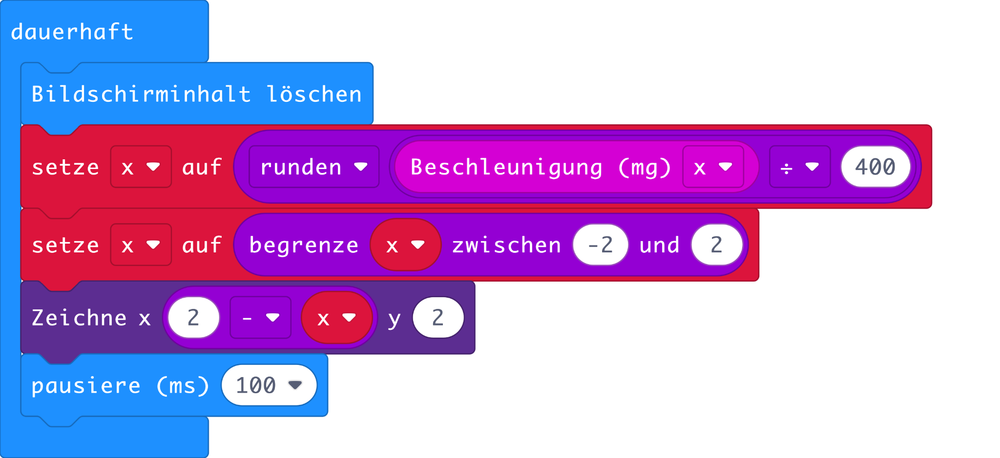

Im Gleichgewicht
Du hast den Beschleunigungssensor schon in dem Kapitel Wo ist unten? kennengelernt. Er wurde dazu verwendet zu bestimmen, wie der micro:bit bezüglich der Erde geneigt ist. In diesem Kapitel geht es darum, die Richtung genauer zu bestimmen. Du kannst dir den Beschleunigungssensor wie ein Federpendel vorstellen. Ein Federpendel ist eine Spiralfeder, an der ein Gewicht befestigt ist, siehe Video 1.
Video 1 – Federpendel als Neigungssensor
Wird das Pendel geneigt, rutscht die Masse nach unten und die Feder wird je nach Drehrichtung gedehnt oder gestaucht. Bring man an dem Pendel eine Skala an, kann man so die Neigung des Pendels bestimmen. Das Federpendel kann auch benutzt werden um Geschwindigkeisänderungen, d.h. Beschleunigungen zu messen, siehe Video 2.
Video 2 – Federpendel als Beschleunigungssensor
Der Beschleunigungssensor des micro:bit hat ist so ähnlich wie dieses Federpendel aufgebaut. Er besteht auch aus einer Masse, die an einer federnden Struktur angemacht ist. Das ganze ist jedoch so klein, dass es in das kleine schwarze Kästchen auf der Rückseite passt, siehe Video 3.
Video 3 – Aufbau eines Beschleunigungssensors (Bosch Mobility Solutions)
Im Beschleunigungssensor hat es drei Federpendel drin, welche die Beschleunigung in alle drei Raumachsen messen, siehe Abb. 1. Im Folgenden wirst du die Messwerte des Beschleunigungssensors in Richtung x-Achse auslesen und in der Konsole darstellen lassen.

Abb. 1 – Achsen des Beschleunigungssensors relativ zum micro:bit.
Wenn der micro:bit per USB-Kabel mit dem PC verbunden ist, kann er Daten an diesen senden. Verwende dazu die Befehle unter dem Bereich Fortgeschritten und dem Unterbereich Serielle. Der Befehl seriell Wert ausgeben x = y sendet einen Name-Wert-Paar an den PC. Im Video 3 ist gezeigt, wie in der Konsole angezeigt werden. Wichtig ist, dass man das Programm über WebUSB an den micro:bit sendet. Nur dann erscheint erscheint nachher die Schaltfläche Konsole anzeigen Gerät.
Video 3 – Werte das Beschleunigungssensors an den PC senden.
In dem Diagramm können die, vom Beschleunigungssensor ausgegebenen Daten, betrachtet werden. Wenn du den micro:bit neigst, siehst du dass die Beschleunigungswerte zwischen ca. -1000 mg und +1000 mg liegen. Die Einheit mg steht für milli-g. Der Buchstabe g steht für die Stärke der Erdbeschleunigung in Bodennähe.
Mit diesem Wissen ausgestattet, kannst du nun eine Wasserwaage programmieren. Mit einer Wasserwaage kann man zum Beispiel kontrollieren, ob ein Bild waagerecht aufgehängt wurde. Meistens besteht sie aus einem Aluminiumprofil, welches eine oder mehrere Libellen hat. Eine Libelle ist ein, nicht vollständig mit Wasser gefülltes Glasröhrchen, siehe Abb. 2. Das Luftbläschen ist genau dann in der Mitte, wenn die Libelle und damit auch die Wasserwaage horizontal ausgerichtet ist. Je nach Neigung bewegt sich das Luftbläschen auf die eine oder andere Seite.

Abb. 2 – Libelle einer Wasserwaage (Igge / Wikimedia Commons)
Übernimm nun das Programm aus der Abb 3. Der Befehl Zeichne x y, nimmt zwei Zahlen zwischen null und vier und schaltet die LED an der ensprechenden Position ein. Um die Werte des Beschleunigungssensors -1000 , ... , +1000 auf den Bereich 4,3,2,1,0 abzubilden, benötigst du folgende Formel.
x = 2 - round(ax/400)
In der Abb. 3 ist das Programm gezeigt. Schreibe das Programm ab und teste es. Der Befehl begrenze x zwischen y und z, das die Variable x im Bereich zwischen y und z bleibt.

Abb. 3 – Programm für eine Wasserwaage
Aufgaben
- Erweitere die Wasserwaage so, dass auch die Neigung entlang der y Achse berücksichtigt wird. Der LED-Punkt soll sich auch nach oben und unten bewegen.
- Schliesse den Lautsprecher an den micro:bit an und programmiere eine Diebstahlsicherung. Diese sollte man durch Drücken auf A ein- bzw. ausschalten können. Wenn der micro:bit bewegt wird, soll ein Alarmsignal ertönen.
Autor: T. Jenni
Letzte Änderung: 14. Mai 2021

Einsteigerkurs für den BBC micro:bit von T. Jenni, et al. ist lizenziert unter einer Creative Commons Namensnennung - Nicht-kommerziell - Weitergabe unter gleichen Bedingungen 4.0 International Lizenz.